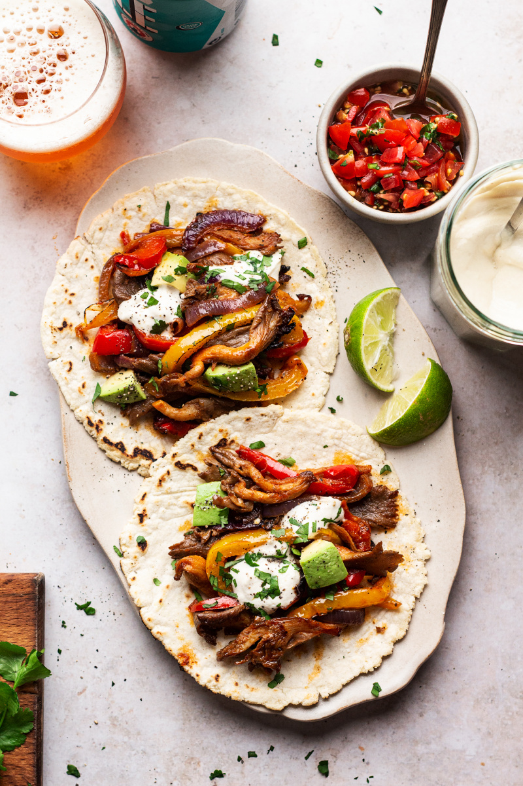

Vegan Fajitas

Getting my children to eat vegetables is never easy. Unless I dish them up some fajitas that is! I don't know if it's the fun of making your own wraps or the fact that these are so delicious, but this recipe from Lazy Cat Kitchen is always a hit in my house.
Ingredients
- 60 ml / 1/4 cup olive oil
- 35 ml / 2 1/2 tbsp soy sauce or tamari (for GF version) or 3/4 tsp salt
- 30-45 ml / 2-3 tbsp lime juice, adjust to taste (I like 3 tbsp)
- 2 tsp maple syrup
- 2 cloves garlic, finely grated
- 1 tsp ground cumin
- 1 tsp smoked paprika
- 1/4 tsp black pepper
- 1 red and 1 yellow pepper, thickly sliced
- 300 g / 10 1/2 oz oyster mushrooms
- 8 soft tortillas (corn for GF version), kept warm
Method
- Make the marinade by combining the first 8 ingredients together. Mix really well.
- Put all of the pepper and onion slices on a large, deep, baking tray. Add the mushrooms, tearing bigger ones into smaller pieces with your hands.
- Coat everything in the marinade and set aside for as long as you can, but you can bake straight away too, if you wish.
- Preheat the oven to 200° C / 390° F.
- Bake the mushrooms and peppers for about 15 minutes, giving everything a good stir and then increase the temperature 225° C / 435° F to bake for another 20-25 minutes, until all juices bake out and the ingredients get a nice char.